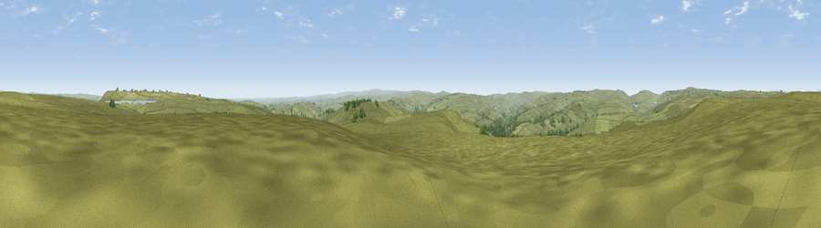

Viewpoint near Pecket Well
#11518 in England · top 14% of its area beats it · near Pecket WellWhere it is
The exact computed spot (SE 00925 30425). Click the marker for map links.
The view, rendered

A 360° render of this exact spot computed from the terrain model, tree cover and land cover — summer colours, afternoon light, calibrated against photographs of famous viewpoints. Real trees, hedges and buildings will differ in detail.
The panorama
Grey silhouette: terrain skyline in each direction (720 bearings, Earth curvature and refraction included). Dashed green: skyline with trees (+15 m) and buildings (+8 m) as obstacles. Blue strip: how far the ground is visible on each bearing.
Where the view opens
Wedge length = distance to the farthest visible ground on that bearing (vegetation-aware). Rings at 10, 25 and 50 km.
What fills the view
95% grassland · 4% woodland ·
Angular shares of the visible panorama (visual magnitude), not map area. Landscape diversity 0.11 (0–1 Shannon).
Key numbers
More beautiful places nearby
The staircase of upgrades: each row has a higher view potential than everything closer. Driving times are estimates from straight-line distance, calibrated against real road routing — check an actual route before setting out.
| Place | Direction | Drive | Score |
|---|---|---|---|
| Viewpoint near Chiserley | S · 3 km | ~7 min | 63.9 |
| Viewpoint near Thornton | E · 7 km | ~14 min | 68.6 |
| Viewpoint near Stump Cross | ESE · 8 km | ~17 min | 71.5 |
| Great Hameldon | W · 22 km | ~36 min | 74.2 |
| Viewpoint near Edenfield | WSW · 22 km | ~37 min | 77.5 |
| Darwen Hill | WSW · 34 km | ~52 min | 80.7 |
| White Brow | WSW · 39 km | ~58 min | 82.9 |
| Warton Crag | NW · 67 km | ~90 min | 83.2 |
53.77017, -1.98745 · source: screening · position refined by local search. Computed location — check access rights before visiting.